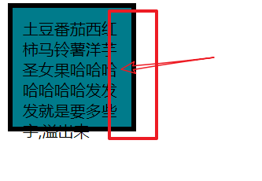
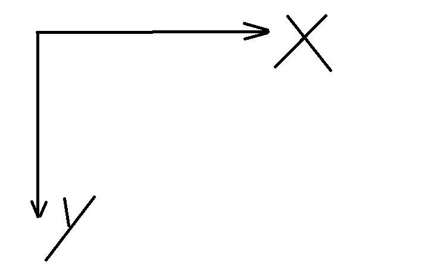
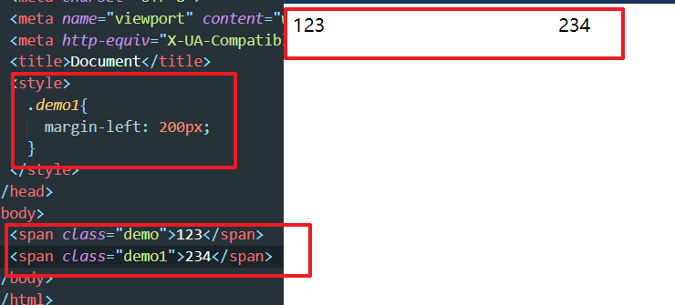
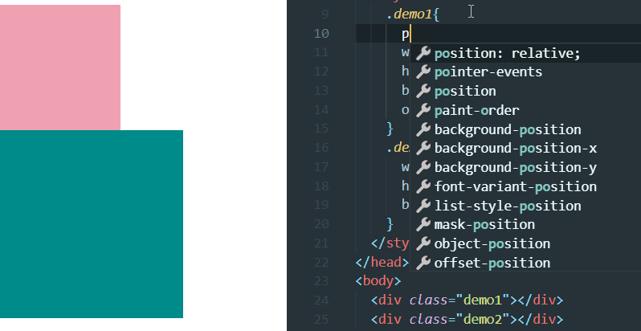
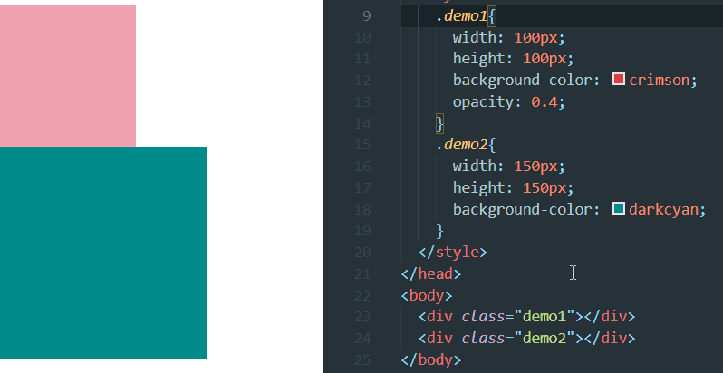
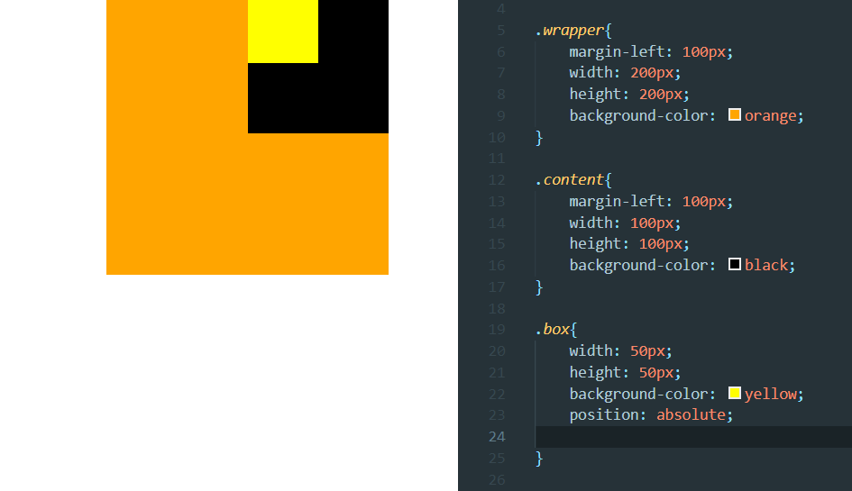
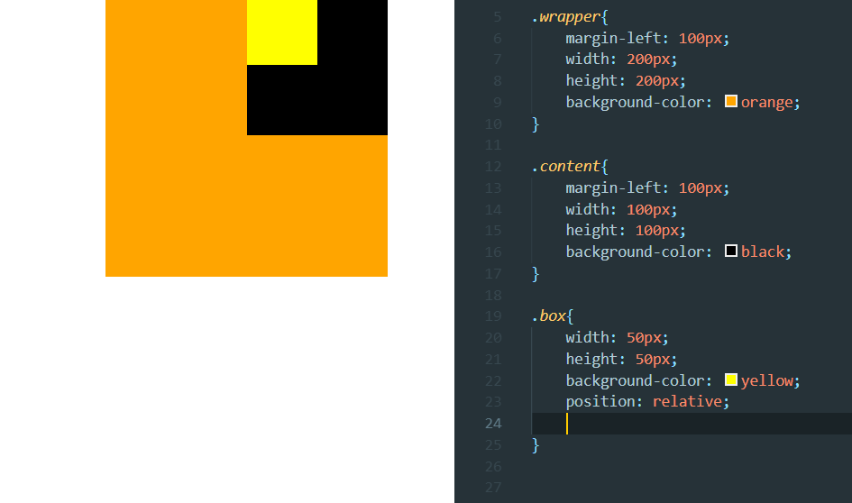

盒子模型
1）盒子的组成三大部分：
A 盒子壁 border
B 盒子内边距 padding
C 盒子内容 width+height
2）盒子模型（四部分组成）
A 盒子壁 border
B 盒子内边距 padding
C 盒子内容 content=width+height
D 盒子外边距 margin
盒子的大小会成为笔试的一部分,计算盒子大小是第一种(不包含margin)
body自带的margin值是多少也出现过.

下面这种，文字和盒子之间隔出了距离，就是 padding，padding 内边距是不能放内
容的。内容是放到内容区 content 的。
1 | div{ |

文档的坐标轴是这样的

设置了 margin 就会推动盒子移动
盒子大小计算
计算可视区域,真实的大小不包括margin
例
1 | div{ |
realWidth：100+10+10+20+20px=160px
realHeight：100+10+10+10+30px=160px
远视图
画个简单的盒子
1 | <div class="content"> |
1 | .content1{ |
按照那个来增加
1 | <div class="wrapper"> |
1 | .content1{ |

margin
通过调整 margin，调整距离

层模型
position 属性规定元素的定位类型。
当position的值为非static时，其层叠级别通过z-index属性定义。
- static: 默认属性,对象遵循常规流。此时4个定位偏移属性不会被应用。
- relative： 对象遵循常规流，并且参照自身在常规流中的位置通过top，right，bottom，left这4个定位偏移属性进行偏移时不会影响常规流中的任何元素。
- absolute： 对象脱离常规流，此时偏移属性参照的是离自身最近的定位祖先元素，如果没有定位的祖先元素，则一直回溯到body元素。盒子的偏移位置不影响常规流中的任何元素，其margin不与其他任何margin折叠。
- fixed： 与absolute一致，但偏移定位是以窗口为参考。当出现滚动条时，对象不会随着滚动。
- sticky： 对象在常态时遵循常规流。它就像是relative和fixed的合体，当在屏幕中时按常规流排版，当卷动到屏幕外时则表现如fixed。该属性的表现是现实中你见到的吸附效果。（CSS3）
定位时left就是盒子的左边框相对,right是右边框,left和top是相对于左上角,以此类推…
absolute
脱离原来位置定位(人移动位置)
1 | .demo1{ |

relative
保留原来位置定位(灵魂移动位置,身体还在)

居中广告demo
1 | div{ |
fixed相对于窗口定位
50%让左上角居中
margin值为负让其中心居中
总结
absolute相对于有定位的父级(祖父级…)进行定位,如果没有,那么相对于文档定位

relative相对于原来的位置进行对位

综上所述:relative可以给元素增加定位属性,然后用absolute进行定位
小练习题目-居中五环
z-index 设置整数值,值越大越上层显示
border-radius : 50%; 圆;
要求,对颜色镶嵌没要求(5环不用套着)